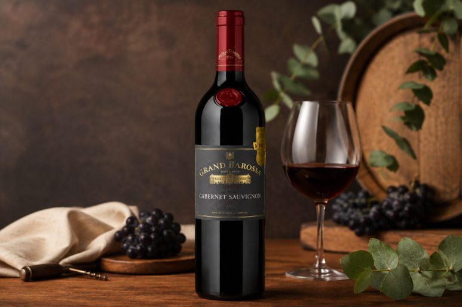
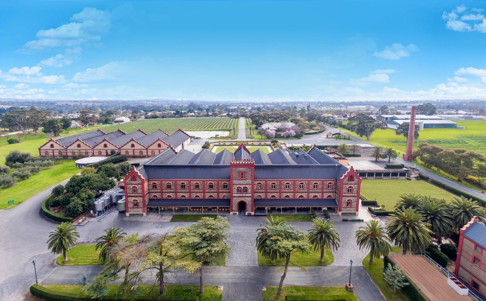
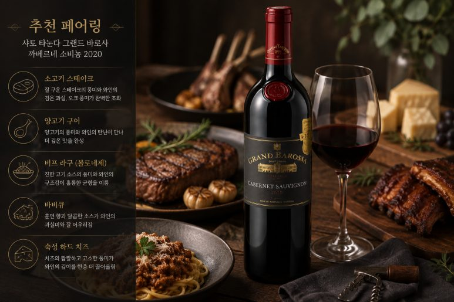
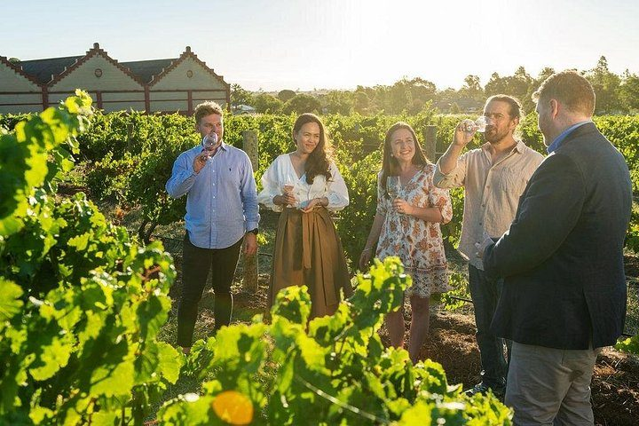

다른 가능성을 보여주는 와인
샤토 타눈다 그랜드 바로사 까베르네 소비뇽 2020
그랜드 바로사 카베르네 소비뇽 2020은 1890년에 세워진 호주 바로사의 샤토 타눈다가 만드는 드라이 레드 와인이에요. 진한 검은 과실 향과 촘촘한 타닌이 있어 가을 고기 요리와 함께할 든든한 레드를 찾는 분께 맞아요.
쉬라즈의 땅에서 만난 까베르네 소비뇽
호주 와인을 이야기할 때 바로사 밸리(Barossa Valley)를 빼놓을 수 없습니다.
그리고 바로사를 떠올리면 대부분 가장 먼저 생각하는 품종이 있습니다.
바로 쉬라즈(Shiraz)입니다.
세계적으로도 바로사는 쉬라즈로 유명한 지역이고, 실제로 수많은 인상적인 쉬라즈가 이곳에서 만들어집니다.
그런데 오늘 소개할 와인은 조금 다릅니다.
샤토 타눈다 그랜드 바로사 까베르네 소비뇽 2020.
쉬라즈가 가장 유명한 지역에서 만들어진 까베르네 소비뇽이라는 점이 이 와인을 선택한 가장 큰 이유였습니다.

🍷 유명한 길 대신, 다른 가능성을 보여주는 와인
와인을 고를 때 저는 가끔 이런 와인에 더 눈길이 갑니다.
누구나 알고 있는 대표적인 품종과 지역의 조합이 아니라,
그 지역에서 조금 다른 모습을 보여주는 와인.
바로사가 쉬라즈로 유명하다는 것은 오히려 이 까베르네 소비뇽을 더 흥미롭게 만듭니다.
같은 지역이라고 해서 반드시 하나의 품종만 잘 자라는 것은 아니니까요.
바로사의 따뜻하고 건조한 기후는 까베르네 소비뇽에도 풍성한 과실미와 충분한 농도를 만들어주며, 우리가 익숙하게 알고 있는 서늘한 지역의 까베르네 소비뇽과는 또 다른 매력을 보여줍니다.
검은 과실의 풍성함과 잘 익은 과실의 농도, 그리고 까베르네 소비뇽 특유의 구조감.
이 와인은 바로사라는 지역이 가진 또 하나의 가능성을 보여줍니다.
🌿 바로사에서 태어난 까베르네 소비뇽
잔에 따르면 먼저 블랙커런트와 블랙베리 같은 검은 과실 향이 풍성하게 올라옵니다.
뒤이어 시더, 바닐라, 스파이스와 같은 오크 숙성에서 오는 뉘앙스가 더해지면서 향이 점점 복합적으로 펼쳐집니다.
입안에서는 잘 익은 과실의 풍부함이 먼저 느껴지고, 이어서 까베르네 소비뇽 특유의 탄탄한 탄닌과 산도가 와인의 중심을 잡아줍니다.
특히 프렌치 오크에서 숙성하면서 얻은 은은한 오크 풍미가 과실과 자연스럽게 어우러져 있습니다.
그래서 단순히 진하고 무거운 호주 레드라기보다는,
풍성함 속에 구조감이 있는 까베르네 소비뇽에 가깝습니다.
🏰 1890년부터 이어진 샤토 타눈다
이 와인을 만든 샤토 타눈다(Château Tanunda) 역시 흥미로운 이야기를 가지고 있습니다.
1890년에 설립된 샤토 타눈다는 바로사의 오랜 역사와 함께해 온 와이너리입니다.
오랜 시간 동안 한 지역의 와인을 만들어왔다는 것은 그 자체로 상당한 의미가 있습니다.
그리고 그 긴 역사 속에서 바로사의 대표적인 쉬라즈뿐 아니라 다양한 품종을 통해 지역의 가능성을 보여주고 있다는 점도 샤토 타눈다의 매력입니다.
익숙한 하나의 이미지에 머무르지 않고, 같은 땅에서 다양한 모습을 보여주는 것.
그것이 이 와인을 선택하면서 특히 마음에 들었던 부분입니다.

🥩 어떤 음식과 함께 마시면 좋을까?
풍성한 과실과 탄탄한 구조를 가진 와인인 만큼 육류와 좋은 궁합을 보여줍니다.
특히 소고기 스테이크와 함께 마시는 것을 추천합니다.
잘 구운 고기의 풍미와 와인의 검은 과실 향이 만나고, 육즙과 지방감이 탄닌을 부드럽게 만들어주면서 훨씬 편안하게 즐길 수 있습니다.
그 외에도 양고기, 바비큐, 비프 라구, 숙성 치즈처럼 풍미가 진한 음식과 잘 어울립니다.
추천 페어링
🥩 소고기 스테이크
🍖 양고기 구이
🍝 비프 라구
🥓 바비큐
🧀 숙성 하드 치즈

🍷 그래서 이 와인을 골랐습니다
와인에는 그 지역을 대표하는 품종이 있습니다.
하지만 때로는 가장 유명한 선택이 아닌 다른 선택에서 그 지역의 새로운 매력을 발견할 수 있습니다.
쉬라즈의 땅으로 유명한 바로사에서 만들어진 까베르네 소비뇽.
저는 바로 그 점이 이 와인을 특별하게 만든다고 생각합니다.
잘 알려진 것만이 전부가 아니라는 것.
하나의 지역에도 우리가 아직 발견하지 못한 다양한 가능성이 있다는 것.
샤토 타눈다 그랜드 바로사 까베르네 소비뇽 2020은 그런 생각을 자연스럽게 떠올리게 하는 와인입니다.
오늘은 익숙한 쉬라즈 대신,
바로사의 또 다른 얼굴을 만나보는 것은 어떨까요? 🍷

이 글은 땡큐와인 네이버 블로그에 먼저 올린 글이에요.